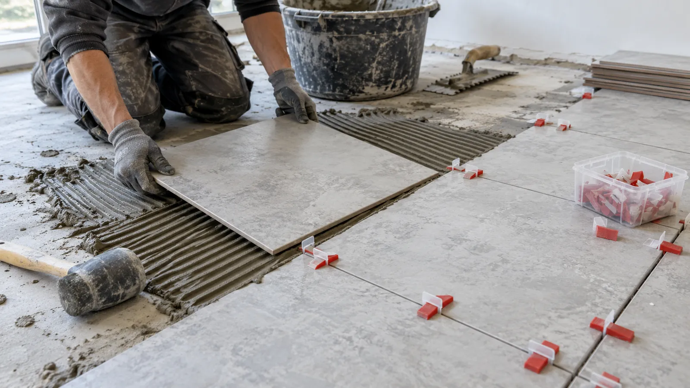
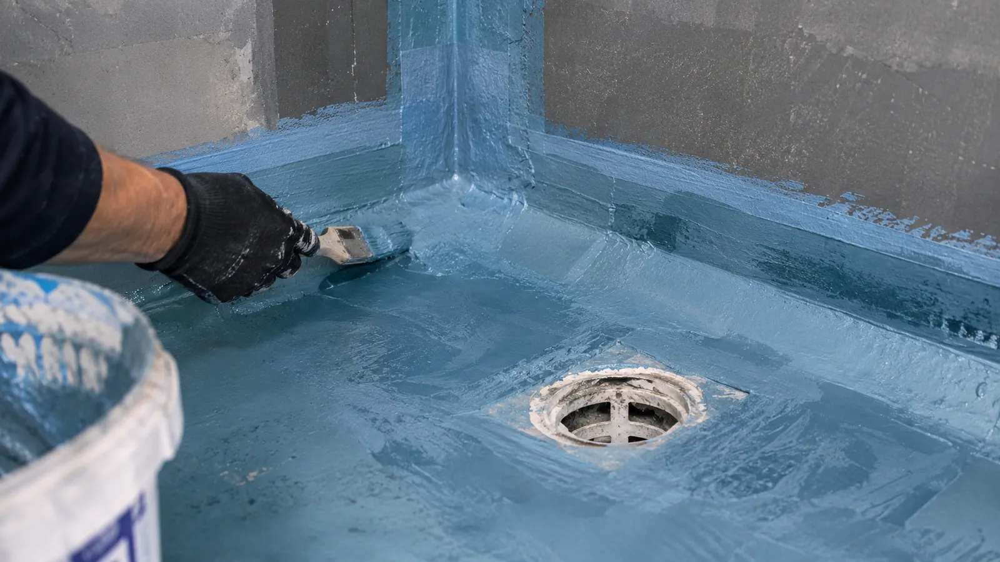
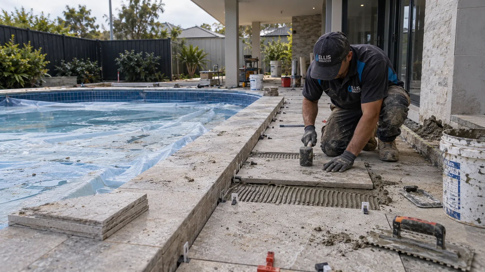
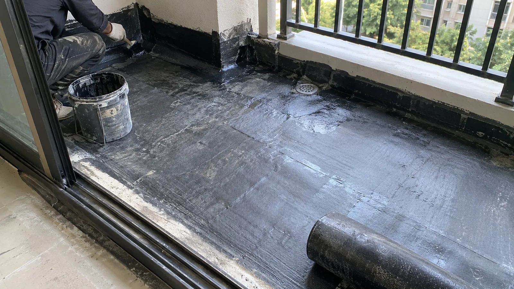

Water entering a wet or exposed area
For a shower that leaks during use, start with shower leak repair. For outdoor water entry, review balcony waterproofing or roof waterproofing for the relevant access and drainage considerations.
Ellis Services Group · Adelaide
Waterproofing, wall and floor tiling, and assessed surface repairs for Adelaide homes. Choose new installation or an existing leak or damaged finish, and we will confirm the preparation and work in a written quote.
Adelaide local team · Assessment, written scope, installation
Bathroom waterproofing · Membrane application
Choose a service
Start with the room and the work you need: new membranes, a bathroom renovation or Adelaide wall and floor tiling services. For existing leaks or damaged finishes, use the repair options below.
Waterproofing
For new or renewed bathroom, laundry and wet-area membranes, with the base and junctions prepared before tiling.
AssessmentScopeDelivery
Bathroom projects
Plan membrane and tiling stages for a bathroom renovation. An existing shower leak starts with source assessment to identify the repair.
AssessmentScopeDelivery
Tiling services
Choose bathroom walls, kitchen splashbacks or living-area floors. We assess the base, tile layout and finished levels for the installation.
AssessmentScopeDelivery
Service coverage
Find our Adelaide regions and listed suburbs. Select your location to carry it into the enquiry form, or ask about an unlisted suburb.
AssessmentScopeDelivery
From membrane to tiled surface
Explore the surfaces and details involved in our waterproofing and tiling services: prepared junctions, membrane application, tile layout and finished edges.




Existing leaks and damaged surfaces
A stain or cracked finish can have several causes. These service guides explain what we assess and what affects the work before you request a quote.
For a shower that leaks during use, start with shower leak repair. For outdoor water entry, review balcony waterproofing or roof waterproofing for the relevant access and drainage considerations.
Choose tile repairs and replacement for broken or loose tiles, or shower regrouting and resealing for worn joints. Assessment confirms whether a local repair suits the condition beneath the finish.
A clear approach
Our Adelaide local team coordinates the agreed preparation, waterproofing and tiling stages. Separate trade work and return-to-use timing are confirmed for your project.
Need a hand?
Call or send an enquiry with your suburb and the work you need. Photos are optional and can be emailed; you can start without measurements or selected tiles.
CALL 0425 170 688Adelaide office
63 Pirie St, Adelaide SA 5000
Our Adelaide office has its own local team within Ellis Services Group. Meet our Adelaide team and company, use the map to find the office, or send an enquiry for waterproofing or tiling.
Your project, one service scope
Need shower leak repairs, new tiled surfaces or repairs to an exposed roof or balcony? Choose your service above, or contact Ellis for an on-site assessment and an itemised quote.